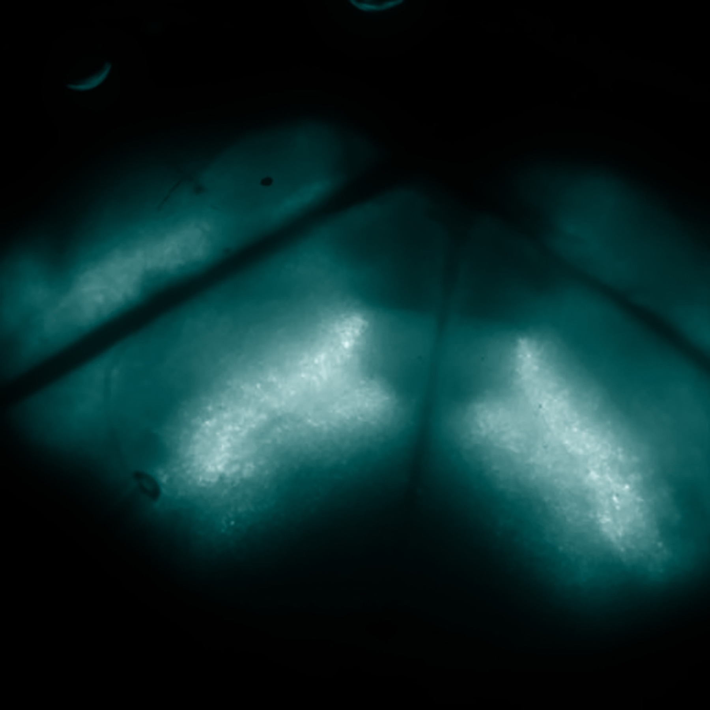
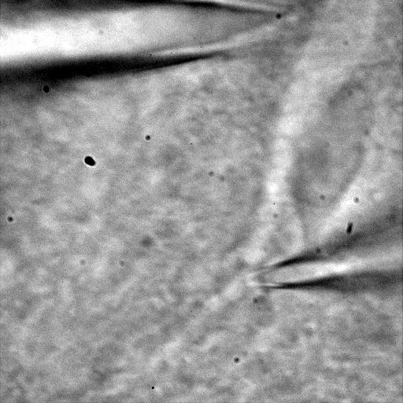
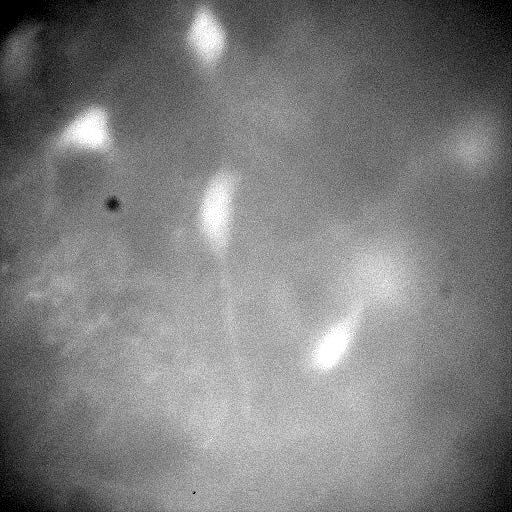
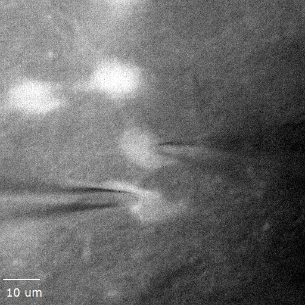

Principal Investigator
Sufyan Ashhad
Reader F (Assistant Professor)
Department of Neuroscience, NCBS–TIFR
Bengaluru, India



We investigate the neuronal mechanisms responsible for generating and controlling breathing rhythms, using an integrative and interdisciplinary approach that combines experimental and computational neuroscience.
Our research asks how molecular, cellular and network interactions contribute to information processing in the nervous system and ultimately to behaviour. We combine electrophysiology, cell-type-specific genetics, holographic optical stimulation, quantitative modelling and behavioural experiments to understand the preBötzinger Complex and the wider breathing control system.
The goal is to connect mechanism across scales—from active dendrites and synaptic interactions to resilient network dynamics and breathing-modulated behaviour.
Principal Investigator
Reader F (Assistant Professor)
Department of Neuroscience, NCBS–TIFR
Bengaluru, India
Breathing is a fundamental motor behaviour that must persist throughout life while remaining highly adaptable. We study the mechanisms that detect change, transform internal and external signals into appropriate respiratory responses, and coordinate breathing with other brain and motor activities.
Neuronal dendrites act as computational units capable of nonlinear transformations of synaptic input. We use somato-dendritic recordings, two-photon holographic glutamate uncaging and multiscale biophysical models to test how active conductances regulate recruitment of respiratory neurons.
We combine intersectional genetics, fluorescent targeting, electrophysiology and optical perturbation to identify the connectivity and dynamic interactions among rhythmogenic, pattern-forming and inhibitory neuronal populations.

We study how sparse network activity synchronises, crosses a propagation threshold and becomes an inspiratory motor command. Experiments and models address burstlets, bursts, attractor dynamics, heavy-tailed connectivity, robustness and lability.
We investigate how sensory signals and distributed neural systems reshape breathing under physiological and pathological conditions, and how respiratory activity is coordinated with orofacial behaviours, movement, arousal and emotion.
Human experiments and quantitative analyses test how breathing frequency, amplitude and phase interact with fine motor control. Dynamical systems and statistical models connect these behavioural observations to circuit-level hypotheses.

Principal Investigator
Our laboratory brings together experimental neuroscience, computation, engineering and behavioural analysis to understand how a vital rhythm remains robust without becoming rigid.
Add current laboratory members in js/site-data.js; cards appear here automatically.
Join the laboratory
We welcome inquiries from students, research trainees, postdoctoral fellows and collaborators from experimental, computational, engineering, physics, mathematics and behavioural backgrounds.
Start a conversationContact us
Department of Neuroscience
National Centre for Biological Sciences
Tata Institute of Fundamental Research
Bellary Road, Bengaluru 560065, India
breathing-brain.com